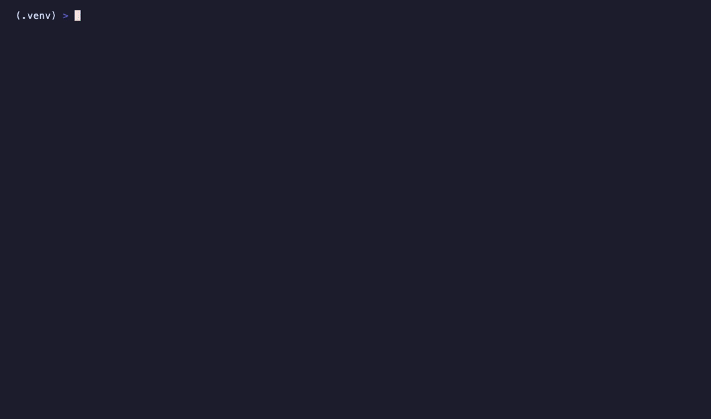

Inspect, convert, and validate ML models. Preserve your Arabic tokenizer.
pip install naql
You fine-tune a model with Arabic support. You convert it from HuggingFace to GGUF for deployment. The conversion silently drops Arabic tokens, shifts vocab indices, or corrupts diacritics. Your model now outputs gibberish for Arabic while English still works fine. naql catches this before it reaches production.
llama.cpp quantized models. .gguf files.
HuggingFace safe format. .safetensors files.
Open Neural Network Exchange. .onnx files.
Apple MLX framework. weights.npz + config.json.
Native PyTorch checkpoints. .pt, .bin files.
Model directories with config, tokenizer, weights.
GPU quantized models via AutoGPTQ. 4-bit inference.
Activation-aware weight quantization. High quality 4-bit.
Counts Arabic tokens in the vocabulary. Reports percentage, character coverage, and script distribution across the full vocab.
Compares source and target tokenizers after conversion. Catches dropped tokens, shifted indices, and corrupted diacritics.
Verifies all 28 Arabic letters are present in the tokenizer. Checks tashkeel (diacritics), Arabic digits, and common bigrams.
Tests the most common Arabic character bigrams against the tokenizer. Low coverage means the model will over-tokenize Arabic text.
| From / To | GGUF | SafeTensors | ONNX | MLX | PyTorch | HF | GPTQ | AWQ |
|---|---|---|---|---|---|---|---|---|
| GGUF | - | Yes | - | Yes | - | Yes | - | - |
| SafeTensors | Yes | - | Yes | Yes | Yes | Yes | - | - |
| ONNX | - | Yes | - | - | Yes | - | - | - |
| MLX | Yes | Yes | - | - | - | Yes | - | - |
| PyTorch | Yes | Yes | Yes | Yes | - | Yes | - | - |
| HuggingFace | Yes | Yes | Yes | Yes | Yes | - | Yes | Yes |
| GPTQ | Yes | - | - | - | - | - | - | - |
| AWQ | Yes | - | - | - | - | - | - | - |
Read model format, size, quantization, layer count, and vocab. Works on files and directories.
Scan tokenizer vocab for Arabic tokens. Reports coverage, character presence, and script distribution.
Convert between formats. Generates the command, runs it, and validates Arabic tokenizer preservation.
Compare source and target after conversion. Checks vocab alignment, token mapping, and Arabic integrity.
Compare two models side by side. Shows field-level differences with Arabic token delta.
List supported formats with detection rules, file extensions, and available conversion paths.
Show how naql works — format detection pipeline, conversion strategy, and Arabic validation logic.
